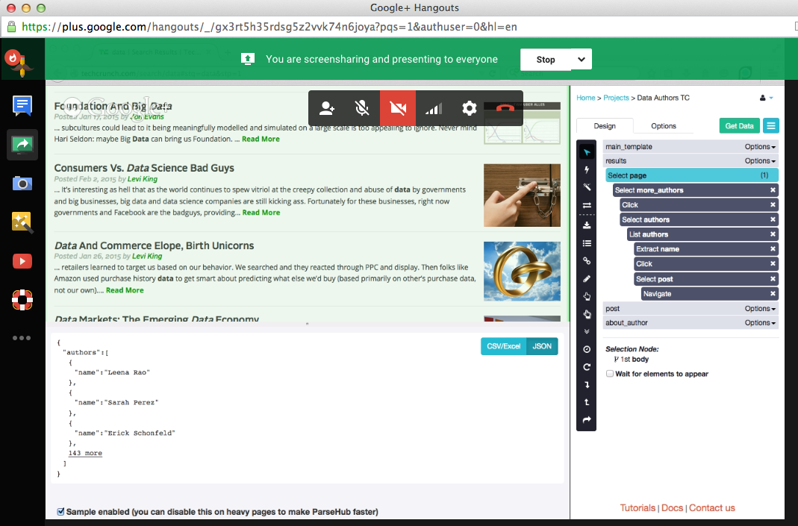
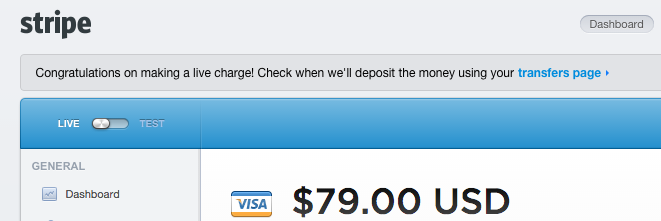
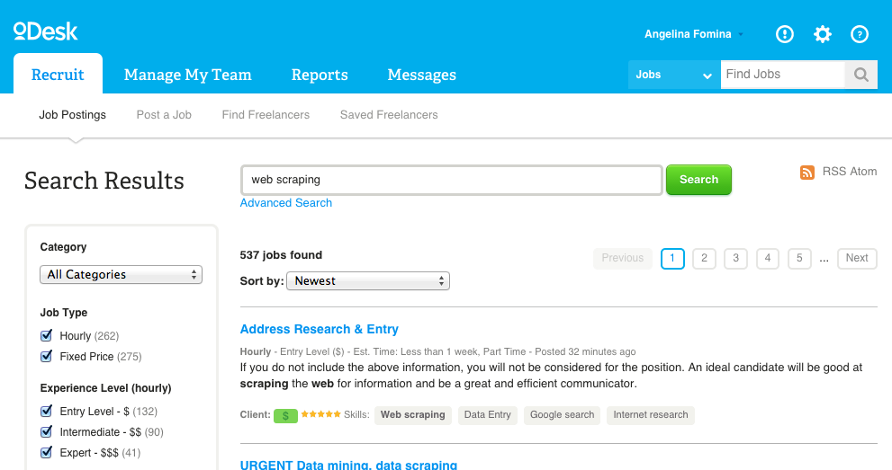
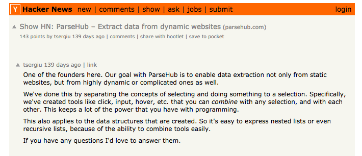
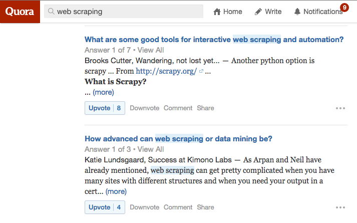

ParseHub, our visual web scraping tool, launched in September 2014. We had our first 10 paying customers within a few weeks of launch. Here are 7 tips that we found useful on our journey.
1. Don’t rush
There is a lot of pressure to launch early and grow from day one. Yet premature growth can be detrimental to a small team that is not equipped to handle thousands of sign-ups.
We didn’t launch publicly right away. Instead, we focused on finding a pain point.
We solved one problem for one type of customer very well.
- The one problem: extracting data from shitty sites.
- The one customer: developer or professional with technical knowledge.
There are dozens of competitors that can extract data from simple, well-structured sites.
But nobody could tackle the edge cases - the shitty sites. You know them: the [navbar] that makes you cringe, the nested dropdowns, the data stuck inside a map, or the government site that's partying like it's 1999. Those are the kinds of sites that people wanted data from, and no other tool could provide.
Building a tool to handle the myriad edge cases encountered in web scraping is no easy task. We grabbed a random sample of 30 scraping jobs from oDesk and told ourselves we wouldn't launch publicly until our tool could handle at least 20 of them. It took almost a year of development before we hit that milestone.
After we built a product for this one type of customer, we moved on to make the product better for other types of customers.
Tip #1: Focus on finding a real pain point and solving it for one
target customer type.

2. 50+ hours of user tests with potential customers
We didn’t build blindly.
As Steve Blank would put it, "we got out of our basement". Actually, we stayed in our basement and shared screen over hangouts and skype, but you get the point. With his lean start-up methodology he teaches start-ups to talk to over 100 customers while building their MVP.
Almost every change to our product was hinted at by what the users did during the interview.
Initially, we had text-only tutorials to explain our features. People rapidly clicked through them, without paying attention. As soon as we made the tutorials interactive, retention went up. Now users have to solve small tasks to progress through tutorial steps.
We totaled over 50 hours of user tests before launching. We:
- Asked friends, co-workers and friends of friends to use our product (while we watched).
- Found potential customers on marketplaces like Elance, oDesk and People Per Hour to use our product.
- Interviewed our early adopters and asked them what they needed ParseHub for.
- Tested usability by asking each user to speak out loud and share their thoughts about our product (over screenshare). Tip: Pay attention to what the user does, not just what they say.
- Upgraded the product and tested again!
Some questions we asked:
- "What web scraping techniques and tools did you try?"
- "What did you like/dislike about the things you've tried?"
- "What kind of websites do you want to get data from?"
- "What do you need the data for?"
- "Is this data essential to your business?"
We focused only on solving the customer's problem. For example, if they had difficulty extracting data from a website with a popup, we made sure that ParseHub could take care of that.
Tip #3: Interview as many people as you can while you build your
prototype and ask the right questions.

3. Provide value that customers are willing to pay for
Finding a problem is great. But is it a problem that your customers are willing to part with their hard earned cash to solve?
Before we even had a product, we would go on oDesk every day and apply
for web scraping jobs. We asked people to commit to $150/month for a tool they could use themselves. Once we got a few commitments, we were pretty sure there was a need for ParseHub.
Customers will pay you if you:
- Help them make money
- Help them save money
- Help them save time
ParseHub does all three.
We help companies that rely on a real-time, accurate flow of information make decisions that help them make more money. Thus, enterprises can use ParseHub to gain a competitive advantage from the data they collect.
Small teams with limited resources use ParseHub to save money, so they don’t have to hire or contract a developer to build web scrapers from scratch or waste precious in-house developer hours.
Larger engineering teams save time by focusing on their core product, instead of hosting and maintaining scraping scripts. Data scientists that spent 50 - 80% of their time collecting data, can now spend most of that time deriving useful insights instead.
Of course, it's easy to convince yourself that what you've built is valuable. But the only way to find out for sure is to ask your early adopters to give you their credit card information in exchange for the value you provide. So don't be shy and ask!
Tip #3: Your users will take their credit cards out only if you provide
exceptional value.

4. Leverage marketplaces and communities
We found people to test our product by cold emailing potential customers and by applying for web scraping jobs posted on Elance and oDesk.
Elance and oDesk have thousands of professionals, developers and company representatives looking for all sorts of solutions. We searched for anyone that needed data mining services or was looking for someone to build a web scraper from scratch.
Your potential customers are probably waiting for you right now on online communities.
Just ask yourself:
- "Where does my customer spend his or her time online?"
- "Where does he or she look to find a solution for the problem I am trying to solve?"
For example:
- If you are running a business that can help jewelry designers sell more products, reach out to them on Etsy.com.
- If you want to solve a pain point in the real-estate market you can try Kijiji, Realtor.com and other industry specific communities.
- If you are developing a solution for teachers you can find them on Udemy.com or SkillShare.com.
oDesk and the other freelancing sites were particularly useful, because people list jobs that they will pay you for right now. This information was incredibly valuable to us, and the basis for deciding that ParseHub must handle edge cases exceptionally well.
Tip #4: Find your first few users through marketplaces with
established and large user bases.

5. Soft launch on forums like Hacker News, Reddit & Product Hunt
Once we were ready to share our product with the world we focused on getting free press coverage on Hacker News, Reddit and ProductHunt.
Getting upvotes and trending on the front page of forums is an art in itself. The most important thing is to know what the community values and cater the headline and marketing copy to those values. If you do it right the impact on your traffic can be extremely positive.
On Hacker News, post about building cool technology. On Reddit, link to images, GIFs or videos. Help people learn something new about the world. Most analysis suggests that the best time to post is on weekday mornings.
These three great data-driven guides by Randy Olson and Todd Scheider will help you create successful posts on Reddit: here, here and here.
Tip #5: Explore ways to get free press coverage before you hire a PR firm
or spend any money on marketing.

6. Engage on Q&A sites like Quora and StackOverflow
We answered questions on Quora and StackOverflow about web scraping. This had a measurable impact on our revenues.
You can do the same by finding niche communities and forums that are in the same industry as your product. If you want to learn more take a look at this Quora how-to guide by KissMetrics.
Quora and StackOverflow are not the only active communities you can engage in. Check out these 40 underrated niche sites where you can post about your start-up.
Tip #6: Engaging with your potential users never stops.
You have to be present where they hang out online.
Holy sh*t this is cool. RT @chris_corwin Discovered @parsehub beautiful tool to “extract data from anywhere.” https://t.co/mQDkWbmhxB
— Jason Huck (@jasonhuck) October 29, 2014If you aren't using @parsehub you're missing out; #scrape webpages for #leadgeneration, #contentmarketing, and more. Simple, easy, effective
— Jon Placa (@jonplaca) October 29, 20147. Twitter works magic and so do your first few loyal fans.
We had a few users give us a positive shout-out on twitter - one platform that you must chat with your early customers on.
After our initial launch someone noticed us and reached out to write about us. He wrote an honest comparison between ParseHub and KimonoLabs and included the pros and cons of the first version of ParseHub.
Tip #7: The opinion of your first few users matters more than gold.
Reach out to them, ask for their feedback and engage them in your story.
Do you have any tips and tricks for getting your first 10 SaaS customers? Share them in the comments!
Image by JD Hancock